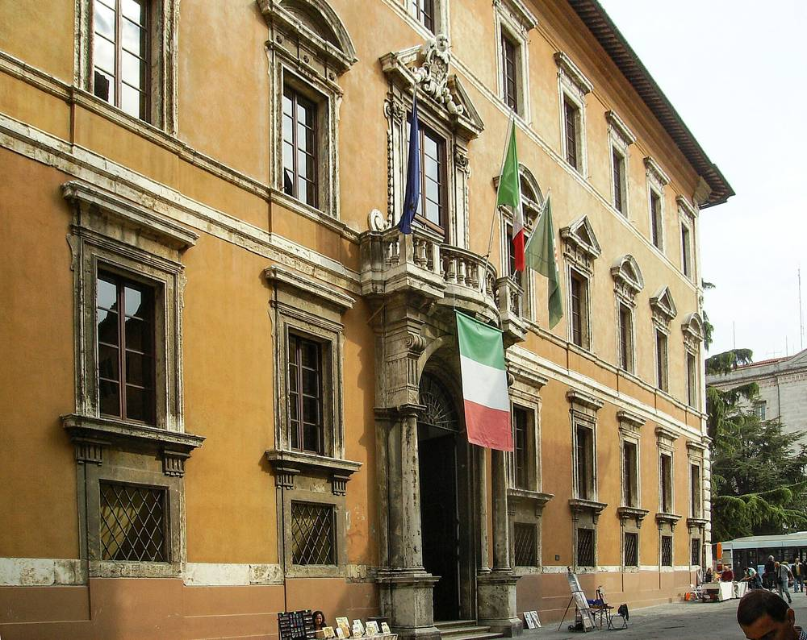

이탈리아 움브리아주, 재생에너지 발전소 받는 지자체 '환경 보상금' 계산 기준 의결…국가법이 정한 기대 발전 수익 1~4%의 산정 방법 마련

운전 시간·연 발전 가능량(MWh)·전력시장(GME) 지표로 발전소 수명 전체 수익 추정…보상금은 지자체 소유 설비·효율화·지자체가 참여하는 재생에너지공동체에 우선 쓰도록
이탈리아 움브리아주 정부가 재생에너지 발전소가 들어서는 지자체에 사업자가 줘야 하는 '환경 보상금'의 액수를 정하는 일반 기준을 의결했다고 11월 4일 발표했다. 국가 입법령 190/2024는 사업자가 발전소를 받아들이는 지자체에 보상하도록 하고, 그 값을 기대 발전량의 가치를 기준으로 간이인가절차(PAS) 사업은 1~3%, 단일인가 사업은 최대 4%로 정해 두었지만, 금액을 객관적으로 계산하는 기술적 방법은 정하지 않아 현장에서 적용이 불확실하고 추정에 재량이 컸다. 주정부가 이번에 정한 것은 이 법정 비율을 매길 바탕을 구하는 계산 방법으로, 운전 시간과 연간 발전 가능량(MWh), 전력시장운영기관(GME)의 공식 시장 지표를 써서 발전소 수명 전체의 수익을 추정하며, 단일인가와 PAS 절차를 밟는 사업에 적용된다. 이 안을 낸 토마스 데루카(Thomas De Luca) 주 집행위원은 국가 차원의 계산 방법이 없어 "여러 해 동안 불확실성과 제각각인 협상이 이어졌다"고 말했다. 그는 지자체가 보상금을 지자체에 소유권이 넘어오는 재생에너지 설비, 에너지 효율화·환경 완화 사업, 공공서비스, 지자체가 만들거나 적극 참여하는 재생에너지공동체(CER) 설립에 우선 쓰게 될 것이라고 설명했다. 주정부는 이 기준으로 발전소를 받아들이는 지역은 공정한 보상을 받고, 사업자는 보상을 포함한 총 투자비를 미리 객관적으로 따져 볼 수 있어 분쟁과 자의적 추정의 위험이 줄어든다고 밝혔다. 11월 4일 의결된 주정부 결의 제1229호의 태양광 계산법은 2026년 신청분부터 발전소 수명을 20년으로 보고, 첫해 발전량을 PVGIS로 추정한 뒤 모듈 열화를 반영해 해마다 0.75%씩 줄여 20년 평균을 내며, 2025년 전력시장 중남부 구역의 낮 시간대 가격을 기준으로 연 수입을 구해 법정 이자율(2026년 1.6%)로 현재가치로 바꾼 다음 법정 비율을 곱한다. 자가소비분과 재생에너지공동체(CER)의 자가소비 몫에는 이 기준을 적용하지 않으며, 주법은 보상을 되도록 지자체에 소유권을 넘기는 재생에너지 설비로 갚게 하고 그 설비는 공공서비스나 지자체가 발기하거나 참여하는 CER에 쓰도록 했다. 결의 부속서의 9.8MW 계산 예시(실제 사업 아님)에서는 20년 평균 연 발전량 1만2,736MWh, 연 수입 약 120만 유로, 현재가치 2,049만 유로를 바탕으로 보상금이 간이인가(PAS) 사업이면 20만4,901~61만4,703유로, 단일인가 사업이면 40만9,802~81만9,604유로로 계산됐다. 주법은 단일인가 사업의 최저 보상률을 적합 지역 2%, 부적합 지역 3%로 국가법보다 높여 두었고, 가격·이자율 기준값은 해마다 1월 15일까지 갱신된다.
시민에너지 관점
아일랜드가 정부 지원 재생에너지 사업에 발전량 MWh당 2유로를 15년 동안 지역이익기금으로 걷는 것과 달리, 움브리아는 국가법이 정한 기대 발전 수익의 비율을 실제 돈으로 바꾸는 계산법을 마련해 발전소가 많이 벌수록 지역 몫도 커지게 했다. 보상 기준이 분명해지면 사업비가 늘어 투자가 줄어든다는 걱정이 있을 수 있지만, 주정부 설명대로 계산법이 정해지면 사업자도 총비용을 미리 알 수 있어 오히려 지역과의 협상과 분쟁에 드는 시간이 준다. 무엇보다 이 보상금을 지자체 소유 발전 설비와 지자체가 참여하는 에너지공동체에 먼저 쓰게 한 점은, 한 번 받고 끝나는 위로금이 아니라 지역이 스스로 발전소의 주인이 되는 밑천으로 돌리겠다는 뜻이다. 국내에서도 재생에너지 개발이익의 지역 몫을 발전 수익에 연동한 비율로 정하고, 그 돈이 주민과 지자체가 소유하는 발전 설비로 다시 투자되도록 제도를 설계해야 한다.
출처: Corriere dell'Umbria 2026-11-04 Cristiano Vano 원문 보기
출처: pv magazine Italia 2026-11-05 Massimiliano Tripodo 원문 보기
イタリア・ウンブリア州、再エネ発電所を受け入れる自治体への「環境補償金」の算定基準を決定…国の法律が定める期待発電収益の1～4%の算定方法を整備
運転時間・年間発電可能量（MWh）・電力市場（GME）の指標で発電所の耐用期間全体の収益を推計…補償金は自治体所有設備・効率化・自治体が参加する再生可能エネルギー共同体に優先的に充てる
イタリアのウンブリア州政府は11月4日、再生可能エネルギー発電所が立地する自治体に事業者が支払うべき「環境補償金」の額を定める一般基準を決定したと発表した。国の立法令190/2024は、事業者に発電所を受け入れる自治体への補償を義務づけ、その額を期待発電量の価値を基準に、簡易許可手続き（PAS）の事業は1～3%、単一許可の事業は最大4%と定めているが、金額を客観的に算定する技術的な方法は定めておらず、現場での適用が不確かで推計の裁量が大きかった。州政府が今回定めたのは、この法定比率を掛ける土台を求める算定方法で、運転時間と年間発電可能量（MWh）、電力市場運営機関（GME）の公式市場指標を用いて発電所の耐用期間全体の収益を推計するもので、単一許可とPASの手続きを経る事業に適用される。この案を提出したトマス・デ・ルカ（Thomas De Luca）州執行委員は、国レベルの算定方法がなかったため「長年にわたり不確実さとばらばらな交渉が続いた」と述べた。デ・ルカ氏は、自治体は補償金を、自治体に所有権が移される再エネ設備、省エネ・環境緩和事業、公共サービス、自治体が設立または積極的に参加する再生可能エネルギー共同体（CER）の設立に優先的に充てることになると説明した。州政府は、この基準により発電所を受け入れる地域は公正な補償を受け、事業者は補償を含めた総投資額を事前に客観的に見積もれるため、紛争や恣意的な推計のリスクが減るとしている。11月4日に議決された州政府決議第1229号の太陽光の計算方法では、2026年の申請分から発電所の寿命を20年とし、初年度の発電量をPVGISで推定したうえでモジュールの劣化を反映して毎年0.75%ずつ減らして20年平均を出し、2025年の電力市場中南部ゾーンの昼間の価格を基準に年間収入を求め、法定利率（2026年は1.6%）で現在価値に換算してから法定の比率を掛ける。自家消費分と再生可能エネルギー共同体（CER）の自家消費分にはこの基準を適用せず、州法は補償をできる限り自治体に所有権を移す再エネ設備で行うよう定め、その設備は公共サービスや自治体が発起・参加するCERに使うとしている。決議の附属書にある9.8MWの計算例（実際の事業ではない）では、20年平均の年間発電量1万2,736MWh、年間収入約120万ユーロ、現在価値2,049万ユーロをもとに、補償金は簡易許可（PAS）事業なら20万4,901～61万4,703ユーロ、単一許可事業なら40万9,802～81万9,604ユーロと算出された。州法は単一許可事業の最低補償率を適地で2%、不適地で3%と国の法律より引き上げており、価格と利率の基準値は毎年1月15日までに更新される。
市民エネルギーの視点
アイルランドが政府支援の再エネ事業から発電量1MWh当たり2ユーロを15年間、地域利益基金として集めるのとは違い、ウンブリアは国の法律が定めた期待発電収益の比率を実際の金額に換える計算法を整え、発電所が稼ぐほど地域の取り分も大きくなるようにした。補償の基準が明確になると事業費が増えて投資が減るという懸念もあり得るが、州政府の説明どおり計算法が決まれば事業者も総費用を前もって把握でき、むしろ地域との交渉や紛争にかかる時間は短くなる。何より、この補償金を自治体所有の発電設備や自治体が参加するエネルギー共同体に優先的に充てるとした点は、一度きりの見舞金ではなく、地域が自ら発電所の持ち主になる元手に回すという意味である。韓国でも再エネ開発利益の地域の取り分を発電収益に連動する比率で定め、その資金が住民と自治体の所有する発電設備に再投資されるよう制度を設計すべきだ。
出典: Corriere dell'Umbria（コリエーレ・デッルンブリア） 2026-11-04 Cristiano Vano 原文を読む
出典: pv magazine Italia 2026-11-05 Massimiliano Tripodo 原文を読む
意大利翁布里亚大区通过可再生能源电站所在市镇"环境补偿金"计算标准…为国家法律规定的预期发电收益1%至4%确定核算方法
以运行小时数、年可发电量（MWh）和电力市场（GME）指标估算电站整个寿命期的收益…补偿金优先用于市镇所有的设施、能效改造及市镇参与的可再生能源社区
意大利翁布里亚大区政府11月4日宣布，已通过一项一般标准，用于确定可再生能源电站开发商应向电站所在市镇支付的"环境补偿金"数额。国家立法令190/2024要求开发商向接纳电站的市镇提供补偿，并以预期发电量的价值为基准，规定简易许可程序（PAS）项目为1%至3%、单一许可项目最高为4%，但没有规定客观计算金额的技术方法，导致实际适用不确定、估算的自由裁量空间很大。大区政府此次确定的是求出这一法定比例计算基数的方法：利用运行小时数、年可发电量（MWh）和电力市场运营机构（GME）的官方市场指标，估算电站整个寿命期的收益，适用于走单一许可和PAS程序的项目。提出该方案的大区执行委员托马斯·德卢卡（Thomas De Luca）表示，由于缺少国家层面的计算方法，"多年来一直存在不确定性和各不相同的谈判"。他说明，市镇将把补偿金优先用于所有权移交给市镇的可再生能源设施、节能与环境缓解项目、公共服务，以及设立由市镇发起或积极参与的可再生能源社区（CER）。大区政府表示，有了这一标准，接纳电站的地区可获得公平补偿，开发商也能事先客观估算包括补偿在内的总投资，从而减少纠纷和随意估算的风险。11月4日通过的大区政府第1229号决议规定的光伏计算方法，自2026年申请的项目起按电站寿命20年计算：先用PVGIS估算首年发电量，再考虑组件衰减每年递减0.75%求出20年平均值，以2025年电力市场中南部区域的白天时段价格为基准算出年收入，按法定利率（2026年为1.6%）折算为现值后再乘以法定比例。自用电量以及可再生能源社区（CER）的自用部分不适用这一标准；大区法律规定补偿应尽量以把所有权移交给市镇的可再生能源设施来履行，这些设施用于公共服务或由市镇发起、参与的CER。决议附件中9.8兆瓦的计算示例（并非实际项目）以20年平均年发电量1万2,736兆瓦时、年收入约120万欧元、现值2,049万欧元为基础，算出简易许可（PAS）项目的补偿金为20万4,901至61万4,703欧元，单一许可项目为40万9,802至81万9,604欧元。大区法律已把单一许可项目的最低补偿率提高到适宜区域2%、不适宜区域3%，高于国家法律，价格和利率基准值每年1月15日前更新。
市民能源视角
爱尔兰对政府支持的可再生能源项目按每MWh发电量2欧元、连续15年收取地方利益基金，而翁布里亚则为国家法律规定的预期发电收益比例制定了换算成实际金额的计算方法，让电站赚得越多、地方分得也越多。有人可能担心补偿标准明确后项目成本上升、投资减少，但正如大区政府所说，计算方法一旦确定，开发商也能事先掌握总成本，与地方谈判和纠纷所耗费的时间反而会缩短。更重要的是，这笔补偿金被要求优先用于市镇所有的发电设施和市镇参与的能源社区，意味着它不是一次性的慰问金，而是地方自己成为电站主人的本钱。韩国也应把可再生能源开发收益中的地方份额定为与发电收益挂钩的比例，并在制度上确保这笔钱再投资到居民和地方政府拥有的发电设施中。
来源: Corriere dell'Umbria（翁布里亚晚邮报） 2026-11-04 Cristiano Vano 查看原文
来源: pv magazine Italia 2026-11-05 Massimiliano Tripodo 查看原文
Italy's Umbria region adopts criteria for calculating 'environmental compensation' to municipalities hosting renewable plants, setting a method for the 1-4% of expected output value fixed by national law
Lifetime revenue to be estimated from operating hours, annual producible output (MWh) and electricity market (GME) indicators; municipalities to give priority to municipally owned plants, efficiency work and renewable energy communities they take part in
The regional government of Umbria, Italy, announced on November 4 that it has adopted general criteria for setting the amount of "environmental compensation" that developers must pay to municipalities hosting renewable energy plants. National Legislative Decree 190/2024 requires developers to compensate host municipalities and sets the amount, based on the value of expected output, at 1-3% for projects under the simplified authorisation procedure (PAS) and up to 4% for projects under single authorisation, but it lays down no technical method for calculating the sums objectively, leaving its application uncertain and estimates highly discretionary. What the region has now set is the method for working out the base to which those statutory percentages apply: lifetime plant revenue is estimated from operating hours, annual producible output in MWh and the official market indicators of the electricity market operator GME, for projects going through single authorisation or PAS. Regional councillor Thomas De Luca, who proposed the measure, said the lack of a national calculation method had led to "years of uncertainty and uneven negotiations." He said municipalities would use the money as a priority for renewable plants transferred into municipal ownership, energy efficiency and environmental mitigation work, public services, and setting up renewable energy communities (CERs) that the municipality promotes or actively joins. The region said the criteria guarantee fair compensation for host communities while letting developers estimate total investment costs, compensation included, objectively in advance, reducing the risk of disputes and arbitrary estimates. Under the solar method in regional resolution no. 1229, approved on November 4, applications filed from 2026 assume a 20-year plant life: first-year output is estimated with PVGIS and reduced by 0.75% a year for module degradation to give a 20-year average, annual revenue is calculated from daytime prices in the Centre-South zone of the 2025 day-ahead power market, converted to present value at the legal interest rate (1.6% for 2026), and the statutory percentage is then applied. The criteria do not apply to self-consumed energy or to the self-consumed share in renewable energy communities (CERs), and regional law says compensation should preferably take the form of renewable plants handed over to municipal ownership for public services or for CERs that the municipality promotes or joins. In the resolution's annex, a worked example for a 9.8 MW plant (not an actual project), with average annual output of 12,736 MWh over 20 years, annual revenue of about 1.2 million euros and a present value of 20.49 million euros, yields compensation of 204,901 to 614,703 euros under the simplified PAS procedure and 409,802 to 819,604 euros under single authorisation. Regional law has raised the minimum rate for single-authorisation projects above the national level, to 2% in suitable areas and 3% in unsuitable ones, and the price and interest-rate inputs will be updated by January 15 each year.
Citizen Energy View
Ireland collects €2 per MWh of output for 15 years from state-supported renewable projects for community benefit funds, whereas Umbria has built a formula that turns a share of expected output value fixed in national law into real money, so the more a plant earns, the bigger the local share. Some may worry that clearer compensation rules will raise project costs and deter investment, but as the region points out, a set formula lets developers know their total costs upfront, which shortens the time spent negotiating and fighting with host areas. Above all, steering the money first into municipally owned plants and energy communities that municipalities join means it is not a one-off consolation payment but seed capital for places to become owners of power generation themselves. Korea, too, should set the local share of renewable development gains as a percentage tied to generation revenue, and design the system so that the money is reinvested in generation owned by residents and local governments.
Source: Corriere dell'Umbria 2026-11-04 Cristiano Vano Read the original
Source: pv magazine Italia 2026-11-05 Massimiliano Tripodo Read the original